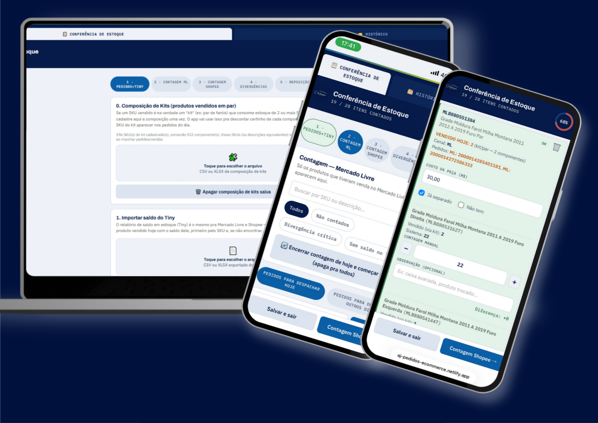
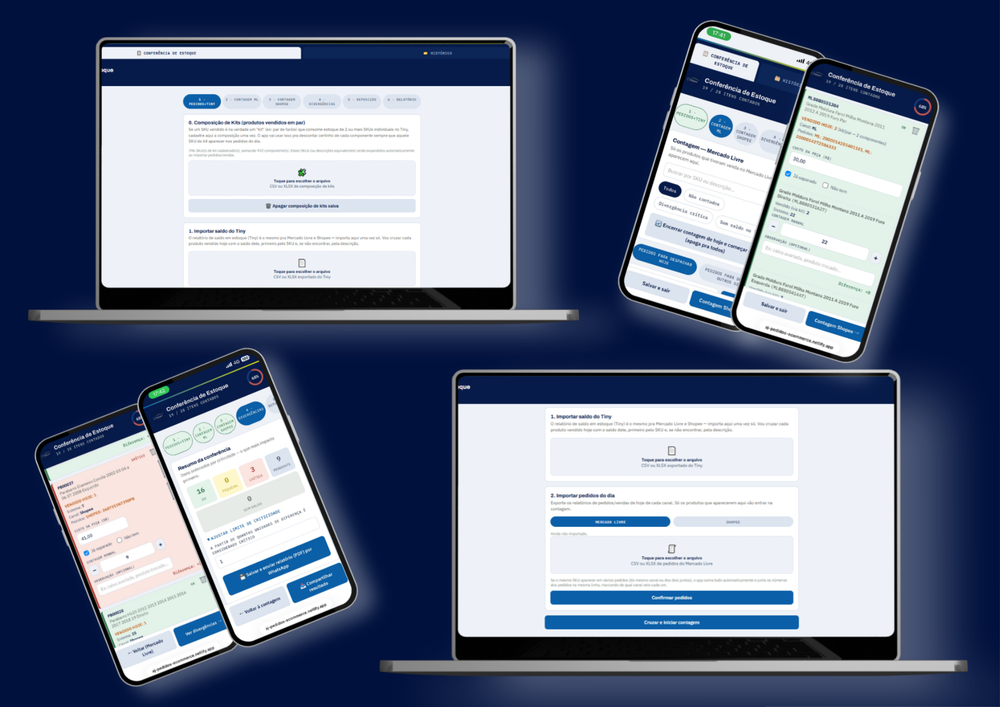
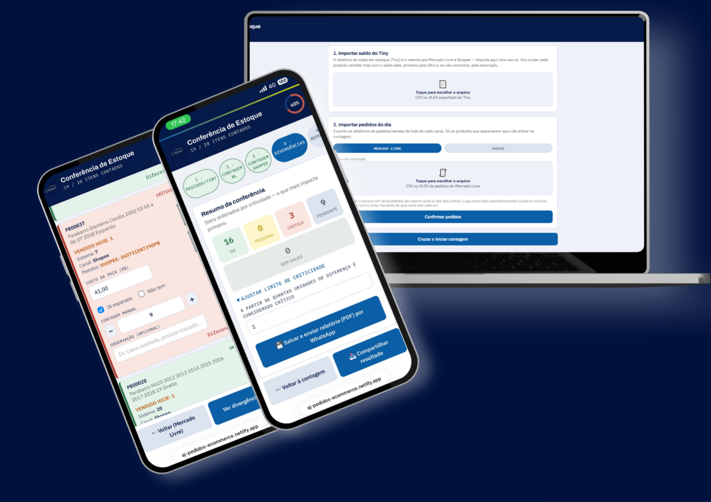

App interno construído pra AJ Bengoa Autopeças - cruza vendas de Mercado Livre e Shopee com o saldo do ERP, 7 mil produtos cadastrados e 80 pedidos por dia pra conferir.
Criei esse app porque vivia esse problema todo dia na prática: a lentidão na logística e na conferência de estoque atrasava a operação inteira, e eu via isso de dentro, não de fora. A separação de pedido era feita em uma planilha aberta no celular - o time separava, e só depois vinha a conferência com o sistema. Quando dava divergência, era preciso revisar tudo de novo: trabalho duplicado, tempo perdido.
Este projeto é o resultado de aplicar, na prática, o mesmo raciocínio que venho estudando em QA: analisar um processo confuso, levantar os requisitos reais (o que precisa ser verdade pra esse processo funcionar), desenhar a solução e validar, testando caso a caso, se ela realmente resolve o que foi pedido.
O levantamento de requisitos, o desenho da lógica de negócio e a validação de cada regra foram feitos por mim. A implementação de código foi construída com apoio de IA (Claude, da Anthropic), sob minha especificação e revisão.
Kits/pares - um SKU vendido como "par" na verdade consome estoque de dois SKUs individuais; sem tratar isso, a conferência erra silenciosamente.
Datas de despacho - parte das vendas do Mercado Livre entra hoje mas só despacha semanas depois; misturar isso com a contagem do dia gera ruído.
Pedidos duplicados - o mesmo produto pode vender nos dois canais no mesmo dia, e o pedido não pode ser contado duas vezes.

Fluxo real de conferência - do celular do time separando pedido, ao notebook fechando a contagem do dia.

Testar não é só rodar caso de teste - é confirmar, com dado real, que o comportamento esperado realmente acontece.
Simulei vendas de kit pra conferir se o sistema separava certinho os dois SKUs componentes.
Testei pedidos com data de despacho futura pra ver se ficavam fora da contagem de hoje, do jeito que devia ser.
Cruzei o mesmo produto vendido nos dois marketplaces no mesmo dia pra confirmar que a quantidade somava certo, sem duplicar pedido.
Bug real encontrado: dois produtos do mesmo pedido deveriam aparecer juntos em uma mesma caixa na tela. Mesmo com a lógica parecendo certa, na prática eles continuavam aparecendo separados. Só achei a causa comparando print de tela com o comportamento esperado, testando de novo com o mesmo pedido, até isolar exatamente onde a ordem quebrava.

Sistema grande (o ERP) resolve a base, mas não entrega o nível de detalhe que a operação específica precisa. Juntando o ERP com essa solução pequena e personalizada, cruzando as duas fontes de informação, o time passou a ver o alerta de divergência na hora - no celular, no momento da separação - sem revisão dobrada depois.
Cada requisito testado e validado eliminou uma etapa de retrabalho: antes, a conferência dependia de alguém revisar a planilha depois que o time já tinha separado tudo, refazendo o que já tinha sido feito quando dava divergência. Com o alerta aparecendo na hora certa, direto pra quem está separando, esse ciclo de revisão duplicada saiu do fluxo - reduzindo o tempo gasto na conferência diária.